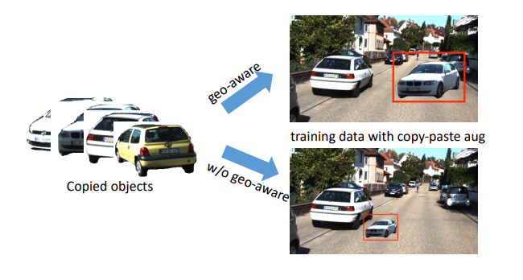

|
Botao Ye I am a PhD student at ETH Zurich, supervised by Prof. Marc Pollefeys and Prof. Davide Scaramuzza. I am also a Doctoral Fellow at ETH AI Center. I completed my master's degree at the University of Chinese Academy of Sciences, where I was lucky enough to be supervised by Prof. Hong Chang. I was also very fortunate to work with Prof. Ming-Hsuan Yang. I obtained my bachelor's degree at Zhejiang University. |
ResearchI have broad interests in computer vision, and now mainly working on 3D vision and generative models. |
|
Botao Ye, Sifei Liu, Haofei Xu, Xueting Li, Marc Pollefeys, Ming-Hsuan Yang, Songyou Peng International Conference on Learning Representations (ICLR), 2025 (Oral) project page / code A feed-forward model that reconstructs scenes from unposed images, demonstrating superior performance in both novel view synthesis and pose estimation. |
|

|
Botao Ye, Sifei Liu, Xueting Li, Marc Pollefeys, Ming-Hsuan Yang International Conference on 3D Vision (3DV), 2025 code Improving the consistency of diffusion-based multi-view image generation model without retraining using epipolar attention. |
|
Botao Ye, Sifei Liu, Xueting Li, Ming-Hsuan Yang Computer Vision and Pattern Recognition (CVPR), 2023 code A self-supervised super-plane constraint for neural implicit 3D reconstruction. |
|
|
Botao Ye, Hong Chang, Bingpeng Ma, Shiguang Shan, Xilin Chen European Conference on Computer Vision (ECCV), 2022 code An efficeint one-stream framework for visual object tracking. |
|
|  |
Qing Lian, Botao Ye, Ruijia Xu, Weilong Yao, Tong Zhang Computer Vision and Pattern Recognition (CVPR), 2022 Exploring geometrically consistent data augmentation methods for monocular 3D object detection. |
Awards |
Academic Services
|
|
template adapted from
this awesome website
|